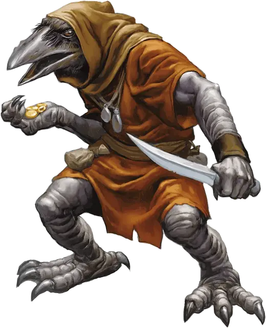

Кенку
Kenku
Средний Гуманоид (Кенку), хаотично-нейтральный

Класс Доспеха 13
Хиты 13 (3к8)
Скорость 30 футов
| мод | спас | ||
|---|---|---|---|
| СИЛ | 10 | +0 | +0 |
| ЛОВ | 16 | +3 | +3 |
| ТЕЛ | 10 | +0 | +0 |
| мод | спас | ||
|---|---|---|---|
| ИНТ | 11 | +0 | +0 |
| МДР | 10 | +0 | +0 |
| ХАР | 10 | +0 | +0 |
Навыки Восприятие +2, Обман +4, Скрытность +5
Чувства пассивное Восприятие 12
Языки Общий, Ауран
Опасность 1/4 (50 опыта)
Бонус мастерства +2
Среда обитания Город, Лес
Особенности
Языки. -понимает Ауран и Общий, но говорит только с помощью особенности Подражание.
Мастер устраивать засады. В первом раунде сражения кенку совершает с преимуществом броски атаки по всем существам, которых он застал врасплох.
Подражание. Кенку может подражать любым звукам, которые он уже слышал, включая голоса. Существо, слышащее эти звуки, может понять, что это подражание, если совершит успешную проверку Мудрости (Проницательность) Сл 14.
Игровой персонаж. Кенку может стать хорошим искателем приключений. Смотрите описание игровой расы Кенку в этой статье.
Действия
Короткий меч. Рукопашная атака оружием: +5 к попаданию, досягаемость 5 футов, одна цель. Попадание: Колющий урон 6 (1к6 + 3).
Короткий лук. Дальнобойная атака оружием: +5 к попаданию, дистанция 80/320 футов, одна цель. Попадание: Колющий урон 6 (1к6 + 3).
Описание
«ЕСЛИ УСЛЫШИТЕ ПЛАЧ РЕБЕНКА В ПЕРЕУЛКЕ, ИДИТЕ ДРУГИМ ПУТЕМ. ВОТ ВАМ МОЙ СОВЕТ».
— ЭНДРОТ НЭГ, КАПРАЛ ГОРОДСКОЙ СТРАЖИ ГЛУБОКОВОДЬЯ
Кенку являются пернатыми гуманоидами, которые блуждают по миру, как бродяги, движимые жадностью. Они могут превосходно имитировать любой ранее услышанный звук.
Падшие стаи. Кенку носят криво пошитые плащи, мантии и тряпье. Эти одеяния покрывают мягкие, гладкие перья их тел, а также лысые руки и ноги. Они шагают осторожно, когда передвигаются на когтях, сделанных для обхвата ветвей деревьев и захвата добычи с необъятных высот. Двигаются они тише ветра, чтоб не привлечь лишнего внимания к своему постыдному виду.
Когда-то кенку парили в небесах, и в их распоряжении было небо и мелодичное щебетание птиц. Служа хозяину, чья личность давно всеми забыта, кенку возжелали блестящих безделушек его дома и захотели разговаривать, чтобы можно было лестью и обманом достать подобные сокровища. Похитив тайну речи из книги в хозяйской библиотеке, они задрапировались в лохмотья и стали выпрашивать красивые вещи. Когда их господин узнал об их жадности, он лишил их крыльев в качестве наказания, заставив их попрошайничать до скончания времен.
Подражающая речь. Кенку могут имитировать все звуки, которые слышали. Кенку, прося денег, может имитировать звук звенящих монет, а описывая рынок, может воспроизвести какофонию уличных торговцев, лающих собак, блеющих овец и криков уличных бродяжек. Имитируя голоса, они могут только повторять слова и фразы, которые слышали, а не создавать новые предложения. Разговор с кенку это выслушивание звуков и бессмысленных стихов.
Кенку говорят друг с другом почти таким же способом. Поскольку они владеют мастерством интерпретации взглядов и жестов друг друга, звуки, которые они создают, чтобы выразить сложные мысли или эмоции, могут быть краткими. Группы кенку также разрабатывают секретные коды. Например, мяуканье кошки может быть секретным кодом для «Готовься нападать!» или «Спасайся кто может!»
Их талант к имитированию распространяется на почерк, и преступные организации часто используют кенку, чтобы подделывать документы. Если кенку совершает преступление, он может подделать доказательства, чтобы обвинить другое существо.
Печаль бескрылых. Все кенку тоскуют по способности летать, и поэтому наказания, которые они назначают друг к другу, часто включают ложные крылья. Такие тяжелые деревянные крылья носят как клеймо позора. В качестве заключительного, трагического напоминания о крыльях, которые у них когда-то были, кенку осуществляют казни, швыряя приговоренных с высоких зданий или скал.